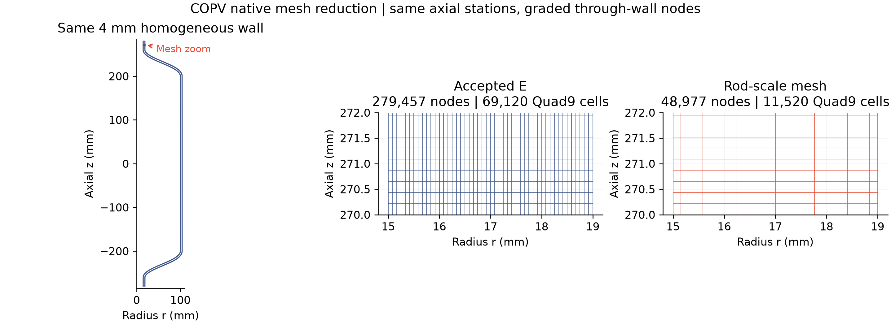
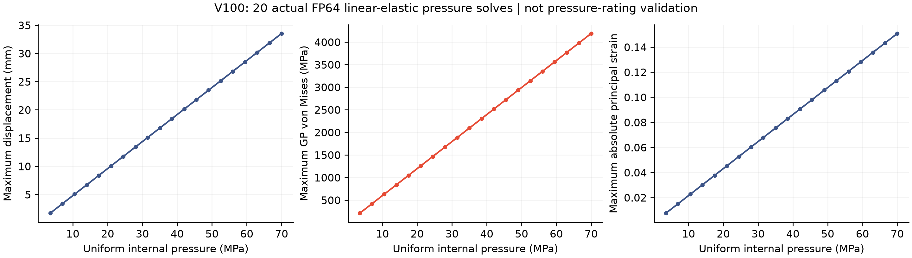
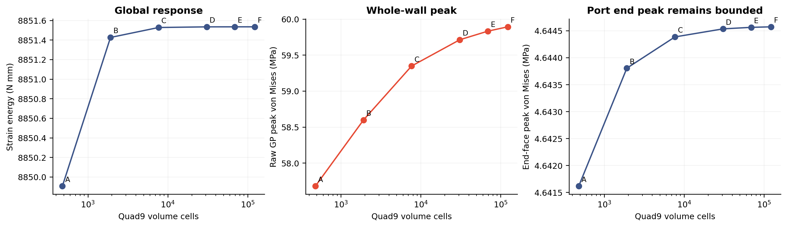
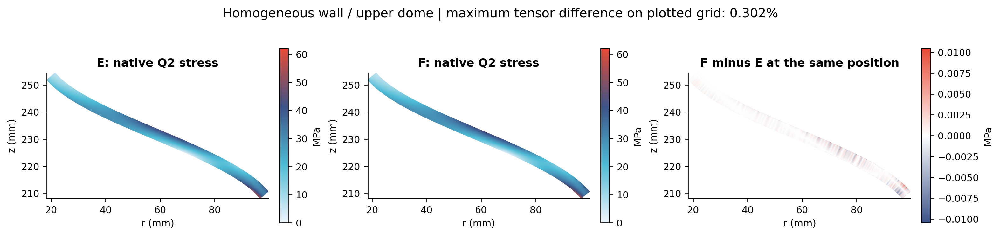
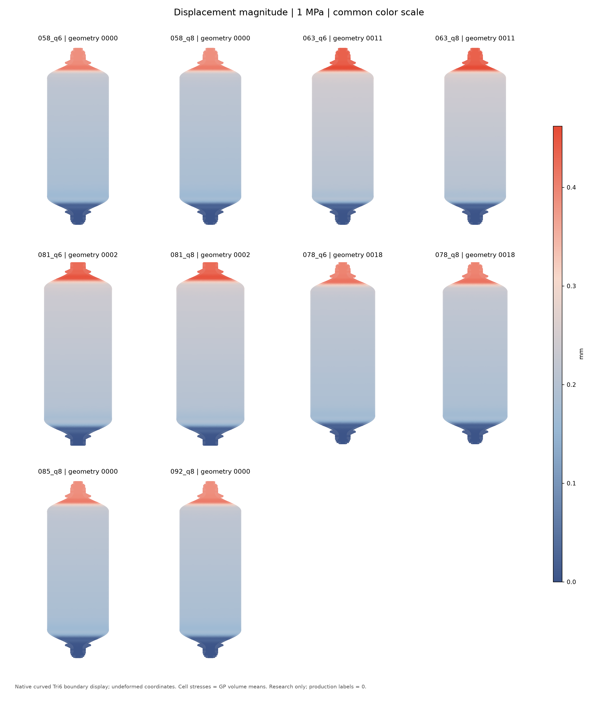
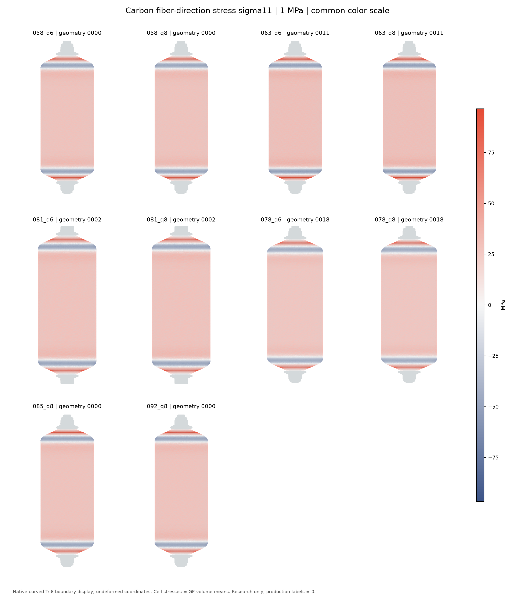
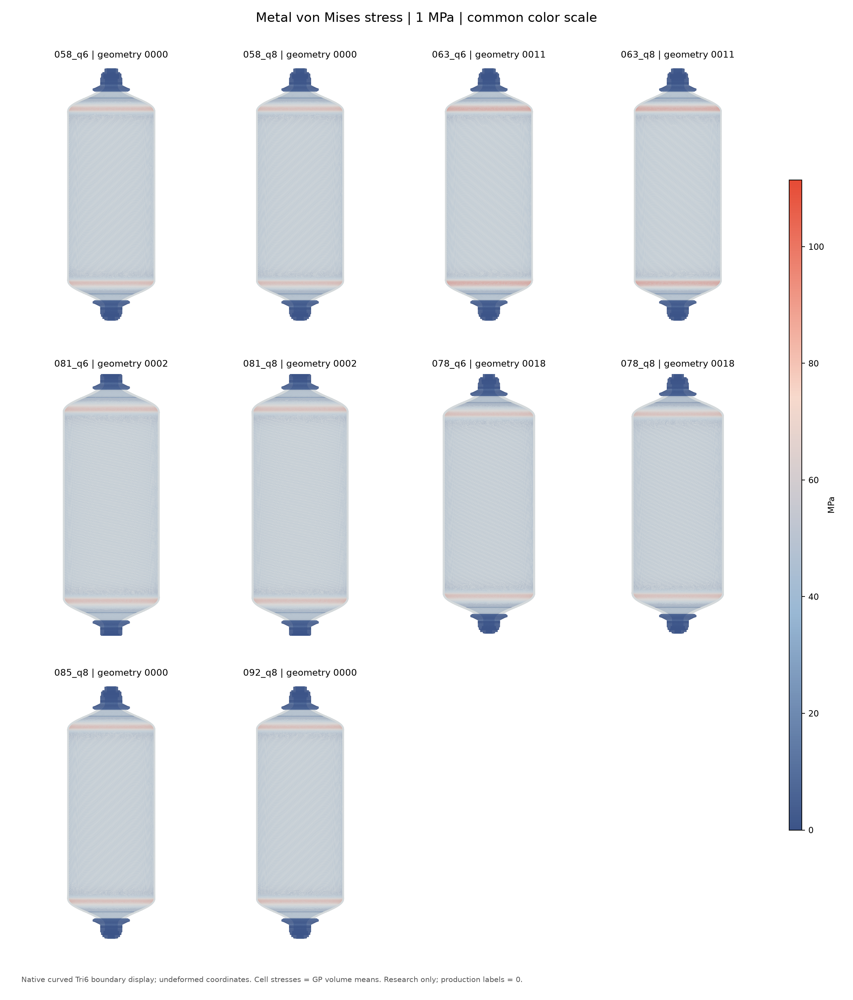
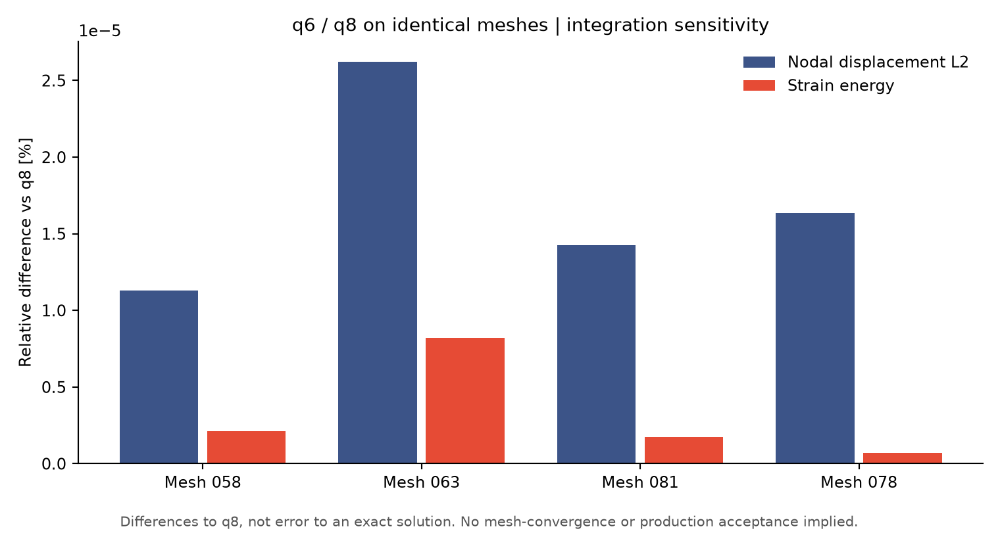
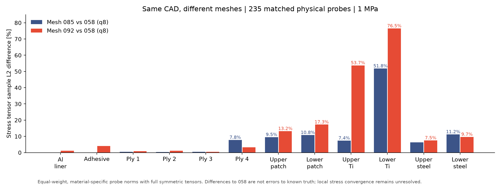

01
验收 / 总结 / 介绍
COPV简化均匀等效壁的原生粗网格、三维内压有限元模型已交付。可查看真实网格、剖切、位移/应力及边界条件。
简化均匀等效壁已通过本轮网格与不同分布对照，内压位移／应力场可交互查看。结论仅限该线弹性等效模型；高压段属于数学外推，不能据此认定额定承压能力，也不代表原分层装配模型已收敛。 当前训练粗网格可由“检查当前训练网格”进入；下方内压场仍保留已发布的 E 网格快照。
新 R8 网格保留同一简化几何、4 mm 均匀等效正交各向异性壁、内部均匀气压及严格端面 MPC；使用 11,520 个 Quad9、48,977 个原生节点和 190,112 条原网格有向边。未从细网格抽样节点，未将三维周向显示细分算入有限元数量。
与 E/E_alt/F 的同位置对照、独立网格分布及全部源积分点检查通过：固定点张量最大差约 0.3615%，全部积分点交叉最大差约 0.8802%，区域原生 GP VM 峰值最大差约 0.453%；沿用 1% 应力和 0.1% 全局门槛。它们是网格间差异，不是对真值误差。完整 20 个粗网格 V100 压力场也已完成并独立核验；训练另行进行，不据此宣称神经网络拟合完成。
检查器沿用 C03 浅色模型、深色网格线和同步视角；可查看原生二维网格、三维剖切、端口／封头／筒身及二阶节点，切换原 E 细网格或不同分布网格。三维外皮辅助线的显示密度不代表原生有限元数量，剖面与二维网格保留完整节点／连接。

20 个压力幅值为 3.5–70 MPa、步长 3.5 MPa，同一个简化几何和网格，只有内部均匀气压及它的封闭端等效合力 pπ15²。不是 20 个几何，也没有外加拉伸／弯曲／温度。每个幅值均为保存下来的实际 V100 求解，复用同一已组装矩阵／预处理器；网页逐例读取对应场，没有用一个场乘压力替代 20 份保存结果。
模型范围：4 mm 均匀等效正交各向异性壁；局部材料轴沿负子午线、周向和外法向。小应变线弹性，不含塑性、损伤、大变形或原铺层／界面应力。下端轴向定位，上端轴向 MPC，径向自由，单点周向定位；原整数端面站点严格选点，每端 97 个节点。原始 FP64 节点、积分点、实际载荷和约束 ID 保留本地。
压力范围依据：美国 DOE介绍车载储氢常见 350／700 bar；本批上限采用 70 MPa 名义参考。Toyota Mirai 官方资料区分正常 70 MPa 与加注最大 87.5 MPa，本批未采用后者。它们不是对本几何的承压认证。
70 MPa 线性计算给出最大位移 33.5263 mm、最大绝对主应变约 15.079%，已超出小变形物理预测可直接采信的范围。故整批交付称线弹性算子幅值基准；高压场不作实际服役、爆破或安全结论。固定线性系统中仅改变压力，主要覆盖幅值方向，不等于新增独立物理机制。
推荐 E：69,120 个 Quad9／279,457 节点；更细 F：122,880／495,489，另有不同分布 E_alt。同物理位置、同材料侧双向积分点对照的最大张量相对变化 0.7909%，小于本轮 1% 门槛；它是网格间差异，非对真值误差。该判定来自实际 CPU FP64 收敛研究，完整 E 网格 CPU／V100 场交叉验证随后通过。它不等于原详细／分层模型收敛。
V100 作业 13780916 在 Tesla V100-SXM2-32GB 上完成，退出 0，墙钟 12分50秒（含额外 1MPa pilot，不计入 20 个幅值）。CPU FFCx 装配、PETSc CUDA CG/GAMG 求解，源允许必要的同矩阵 CPU 真残差修正。全部 20 例真实残差最大 1.985e−10；独立积分点能量相对差最大 1.925e−10，约束／源／输入／原始文件 SHA256 已逐例核验。残差通过与网格收敛分别检查。



| Case | 内压 MPa | max |U| mm | max GP VM MPa | max |主应变| | 真残差 |
|---|---|---|---|---|---|
| p01 | 3.5 | 1.676315 | 209.410 | 0.7540% | 1.655e-10 |
| p02 | 7 | 3.352630 | 418.820 | 1.5079% | 1.671e-10 |
| p03 | 10.5 | 5.028946 | 628.229 | 2.2619% | 1.928e-10 |
| p04 | 14 | 6.705261 | 837.639 | 3.0158% | 1.832e-10 |
| p05 | 17.5 | 8.381576 | 1047.049 | 3.7698% | 1.832e-10 |
| p06 | 21 | 10.057891 | 1256.459 | 4.5237% | 1.884e-10 |
| p07 | 24.5 | 11.734206 | 1465.868 | 5.2777% | 1.746e-10 |
| p08 | 28 | 13.410522 | 1675.278 | 6.0316% | 1.726e-10 |
| p09 | 31.5 | 15.086837 | 1884.688 | 6.7856% | 1.570e-10 |
| p10 | 35 | 16.763152 | 2094.098 | 7.5395% | 1.985e-10 |
| p11 | 38.5 | 18.439467 | 2303.507 | 8.2935% | 1.761e-10 |
| p12 | 42 | 20.115783 | 2512.917 | 9.0474% | 1.960e-10 |
| p13 | 45.5 | 21.792098 | 2722.327 | 9.8014% | 1.790e-10 |
| p14 | 49 | 23.468413 | 2931.737 | 10.5554% | 1.840e-10 |
| p15 | 52.5 | 25.144728 | 3141.146 | 11.3093% | 1.662e-10 |
| p16 | 56 | 26.821043 | 3350.556 | 12.0633% | 1.747e-10 |
| p17 | 59.5 | 28.497359 | 3559.966 | 12.8172% | 1.689e-10 |
| p18 | 63 | 30.173674 | 3769.376 | 13.5712% | 1.542e-10 |
| p19 | 66.5 | 31.849989 | 3978.785 | 14.3251% | 1.832e-10 |
| p20 | 70 | 33.526304 | 4188.195 | 15.0791% | 1.851e-10 |
模型是原轴对称 Q2 解绕轴显示，并非重算的三维实体 FE。保留全部原节点与边中点，剖面用 Quad9 原中心／边中点拆成 8 片；周向细分只影响显示。应力颜色为原单元 9 个 GP 的体积加权 von Mises 均值，不跨单元平滑，VM 不作正交各向异性失效准则。各压力使用统一绝对色标；默认实际位移 ×1，可切换原形／×5。橙色箭头源于原载荷向量，长度仅示意，随显示位移移动，以透视层避免内载荷被遮挡。显示 float32 副本：坐标最大量化差 ≤1.526e−5 mm、位移 ≤1.908e−6 mm、单元平均 VM ≤2.043e−4 MPa；原始 FP64 文件未改。
生产训练标签未自动发布（0）。该记录保留科学范围，不用“场算完”替代物理审核。此前详细装配模型局部应力敏感性、错误端面选择撤回的旧场、H 的真残差失败和重装配拒收均保留在本地审计目录；下方保留已发布历史资料。
以下为此前详细几何、逐材料／铺层模型，未通过局部应力放行；新均匀等效壁的收敛结论不适用于这些历史场。
以下为本批次实际完成且原生核验通过的 FP64 GPU-P2 计算结果，快照时间 2026-10-28T10:58:22Z。q6/q8 表示装配积分阶数，位移单元均为曲边二次 TET10。本轮10份场与汇总分析均已完成；局部应力精度未放行，生产可用标签为 0。
打开已完成场三维模型 ↗ · 完整指标与逐材料积分差异 JSON · 历史20几何试跑查看器
三维模型可切换已完成场、位移/应力、变形倍率、网格及实际 BC/载荷。图与模型使用本批次统一色标。应力显示为原单元积分点体积加权均值，不跨材料或铺层平滑；表面保留真实 Tri6 节点，以四个显示三角形近似曲面。显示压缩仅用于网页，原 FP64 节点与积分点场仍保留在 Sockeye。
| 场 | 几何 | TET10 单元 | 最大位移 mm | 应变能 N·mm | 真实相对残差 | 数值流程 min | 三维模型 |
|---|---|---|---|---|---|---|---|
| 058_q6 | 0000 | 2,150,456 | 0.409324545 | 8112.563719 | 1.007e-10 | 37.3 | 打开模型 ↗ |
| 058_q8 | 0000 | 2,150,456 | 0.409324520 | 8112.563547 | 1.011e-10 | 50.2 | 打开模型 ↗ |
| 063_q6 | 0011 | 2,149,318 | 0.462008900 | 8841.487489 | 1.013e-10 | 42.2 | 打开模型 ↗ |
| 063_q8 | 0011 | 2,149,318 | 0.462008815 | 8841.486765 | 1.009e-10 | 48.6 | 打开模型 ↗ |
| 081_q6 | 0002 | 2,071,970 | 0.452860327 | 10836.236516 | 1.006e-10 | 34.0 | 打开模型 ↗ |
| 081_q8 | 0002 | 2,071,970 | 0.452860302 | 10836.236328 | 1.009e-10 | 44.0 | 打开模型 ↗ |
| 078_q6 | 0018 | 2,007,522 | 0.419170708 | 8635.183317 | 1.000e-10 | 29.8 | 打开模型 ↗ |
| 078_q8 | 0018 | 2,007,522 | 0.419170693 | 8635.183255 | 1.004e-10 | 32.8 | 打开模型 ↗ |
| 085_q8 | 0000 | 1,965,041 | 0.409322188 | 8112.504047 | 9.955e-11 | 33.9 | 打开模型 ↗ |
| 092_q8 | 0000 | 2,116,924 | 0.409327272 | 8112.583498 | 1.007e-10 | 39.9 | 打开模型 ↗ |



以该网格的 q8 为比较基准：位移指标为全部原生节点的相对 L2；应力指标按全部已保存积分点的体积权重和完整对称张量 Frobenius 范数计算，表中取各材料区最大值。不是对真值的误差，也不能替代网格 h 收敛或局部峰值精度审核。
| 网格 | 位移节点 L2 差异 | 能量差异 | 全局应力材料最大 L2 差异 | 局部应力材料最大 L2 差异 |
|---|---|---|---|---|
| 058 | 1.12791e-05% | 2.11677e-06% | 0.00392151% | 0.00392151% |
| 063 | 2.62328e-05% | 8.19763e-06% | 0.00358402% | 0.00358402% |
| 081 | 1.42744e-05% | 1.73592e-06% | 0.00416413% | 0.00416413% |
| 078 | 1.63648e-05% | 7.18823e-07% | 0.00345357% | 0.00345357% |

三套网格均为同一0000 CAD、相同材料和载荷的q8场。两组各235个冻结物理探针全部匹配，无漏配或最近节点替代。整体能量接近，但局部应力差异仍大，092尚未解决局部应力的网格敏感性，生产标签仍为0。
| 网格对照 | 公共探针 | 能量相对差 | 下端Ti应力张量采样L2差 | 下端Ti最大分量差 |
|---|---|---|---|---|
| 058 / 085 | 235/235 | 0.0007334% | 51.8001% | 23.2685 MPa |
| 058 / 092 | 235/235 | 0.0002459% | 76.4997% | 20.8574 MPa |

这里是各材料公共探针上的等权张量采样范数，不是体积范数，也不是对真值的误差。058本身尚未认证局部应力h收敛；不能判断哪套网格更接近真值，也不能因q6/q8积分差异很小就放行局部应力精度。10场与全部分析的最终核验记录
粗网格消融尚未开始：311,577单元草稿未通过曲边与质量检查，未混入本批结果、未替换原网格。既有058/085的局部应力差异仍需解决；本次复算成功不代表局部应力精度放行。
COPV简化均匀等效壁的原生粗网格、三维内压有限元模型已交付。可查看真实网格、剖切、位移/应力及边界条件。
本页保留COPV模型查看与有限元依据。结论限于均匀等效壁线弹性模型，高压为数学外推，生产标签仍为0。
0018六阶已完成515.21秒并通过原生核验；八阶attempt001在装配前因GPU利用率85%超过授权30%保护中止，RAM/空闲显存通过，无数值发散证据。失败完整保留，队列待资源后只建新attempt002，绝不重算六阶。新增完成场8份/独立GPU几何4个，生产0。
已补充 0000 / 0011 的原始失败日志、8 次分阶段建网记录，以及 0002 / 0018 的低质量单元分布。已捕捉 Relocate3D 诱发负雅可比的实例；固定种子单线程对照可重复，但尚未完成修复验收。补强薄过渡和直边面片的曲面表达误差仍需处理。
本次仅新增诊断，原 20 输入 / 18 研究场 / 2 失败记录保留。原筛选门槛是项目要求，不是行业统一标准；没有新增生产放行标签。
建议先试跑 20–50 个几何
建议先试跑 20–50 个几何
核对数据字段和样本对应关系，确认后启动批量任务
项目生产放行记录仍为 0；SICN≥0.05 与逐材料区体积误差≤0.1% 是原项目筛选门槛，并非行业统一标准。新增失败诊断：首轮 Netgen 访问异常，复现捕捉 Relocate3D 诱发翻转；固定种子单线程对照可重复。薄胶层、极区补强与曲面离散仍需修复，诊断不等于修复验收。
20 个不同几何在求解前冻结。原始 18 件 CAD 与修订版 12 材料区分区均保留；通口 1 微米接口对齐另行版本化，逐件体积变化均低于 0.1%。本轮共 27 次建网尝试，得到 18 个不同几何的实际 GPU P2 研究场。重试沿用原输入 ID，不计为新几何。
3 个首轮失败为 Netgen DLL 访问冲突，另 4 个为建网失败。安全优化与 h4 重试恢复 5 个；0000、0011 的后续网格为非正 Jacobian，保留日志且不求解。不能将优化器崩溃归类为 CAD 设计无效。

矩阵/向量为 seqaijcusparse / seqcuda；P2 含独立中边自由度，使用精确嵌入的 P1 CUDA GAMG。CPU 建网、组装与积分点输出；微型最终 SVD 在 CPU。1 MPa 内压加该网格实际孔口多边形端力，下端仅 3–2–1 六自由度定位，没有整端固定、墙面或铰链。
所有 18 例原始节点/单元 ID、参数、网格/合同/源码哈希对应一致，保留原单元 14 点局部应力 [Ncell,14,6]、分材料信息及实际压力/两端力向量。逐例通过残差、力/力矩、能量、半载/零载及原始载荷重建检查。最大真实相对残差 1.77e-10，最大载荷重建相对差 2.98e-14。18 例不包含独立参数化验证用的 C03 几何。
三通道版本化执行的实际墙钟约 70.1 分钟；单个 CUDA 通道按依赖顺序使用。20 个加载卸载显示状态来自经过检查的线弹性缩放，不是 20 次非线性积分。

| 输入 ID | h mm | P2 自由度 | 最大 U mm | 应变能 N·mm | 真实残差 | FE 总耗时 s |
|---|---|---|---|---|---|---|
| copv_c04_0001 | 4.0 | 5,347,872 | 0.365232 | 5881.814 | 1.02e-10 | 223.1 |
| copv_c04_0002 | 6.0 | 4,493,352 | 0.452654 | 10830.265 | 1.04e-10 | 222.2 |
| copv_c04_0003 | 4.0 | 5,693,805 | 0.404016 | 7455.689 | 1.03e-10 | 215.1 |
| copv_c04_0004 | 6.0 | 4,291,002 | 0.414254 | 8760.367 | 1.02e-10 | 224.0 |
| copv_c04_0005 | 6.0 | 4,421,859 | 0.473883 | 8618.142 | 1.11e-10 | 190.6 |
| copv_c04_0006 | 4.0 | 5,653,659 | 0.313539 | 7379.664 | 1.01e-10 | 218.5 |
| copv_c04_0007 | 6.0 | 4,196,418 | 0.426996 | 8236.096 | 1.77e-10 | 207.6 |
| copv_c04_0008 | 6.0 | 4,090,764 | 0.391586 | 7985.360 | 1.03e-10 | 174.9 |
| copv_c04_0009 | 6.0 | 4,011,528 | 0.409130 | 8108.103 | 1.60e-10 | 193.2 |
| copv_c04_0010 | 6.0 | 4,159,359 | 0.409234 | 8108.472 | 1.02e-10 | 173.6 |
| copv_c04_0012 | 6.0 | 4,119,492 | 0.367725 | 7504.974 | 1.03e-10 | 170.6 |
| copv_c04_0013 | 6.0 | 4,132,215 | 0.465448 | 9252.192 | 1.05e-10 | 186.2 |
| copv_c04_0014 | 6.0 | 4,126,647 | 0.364555 | 7212.961 | 1.03e-10 | 176.9 |
| copv_c04_0015 | 6.0 | 4,033,497 | 0.364305 | 6983.753 | 1.02e-10 | 204.2 |
| copv_c04_0016 | 6.0 | 3,415,239 | 0.282483 | 5087.589 | 1.01e-10 | 175.0 |
| copv_c04_0017 | 6.0 | 3,808,026 | 0.407269 | 8781.479 | 1.07e-10 | 199.6 |
| copv_c04_0018 | 4.0 | 6,474,318 | 0.418877 | 8629.685 | 1.01e-10 | 247.9 |
| copv_c04_0019 | 6.0 | 4,534,908 | 0.503213 | 10282.389 | 1.04e-10 | 169.3 |
全部 18 个成功几何均可在上方切换到实际 GPU 场，保留三维圆柱/圆锥 BC 与载荷符号；表面、剖面及材料边界拓扑不删减。网页 U / 应力使用记录误差上限的显示压缩，原始 64 位场与积分点数据在本地保留，不作生产训练释放。每例 manifest 记录显示压缩误差；应力颜色为原单元积分点均值，不跨材料或铺层平均。
研究字段链与小批量审核完成。生产网格门槛未通过，生产标签为 0；局部应力峰值及强度不作认证。C05 扩大数据量前须先修复薄层/极区网格并重新通过原门槛。不同几何只比较响应与耗时，不做最近节点配对或跨域伪逐点误差。
正在读取记录…